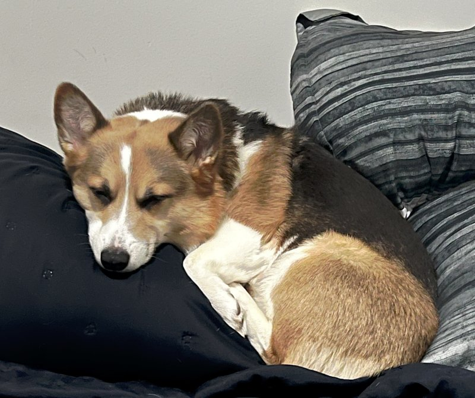

Abe, Ram, & Son's
Musical Instrument Service
Services offered
Piccolo/Flute
Oboe/English Horn
Bassoon/ContraBassoon
Clarinet
Saxophone
Brass
Other Services
Chris the repairman
Chris the musician
Reggie is a Havanese and he loves his emotional support skunk and snuggles
Ray is Reggie's younger brother, he loves to fetch, and he WILL eat your food if you don't keep an eye on it.

Lyra is a spicy spicy corgi, and she'll play all day if you're up for it!